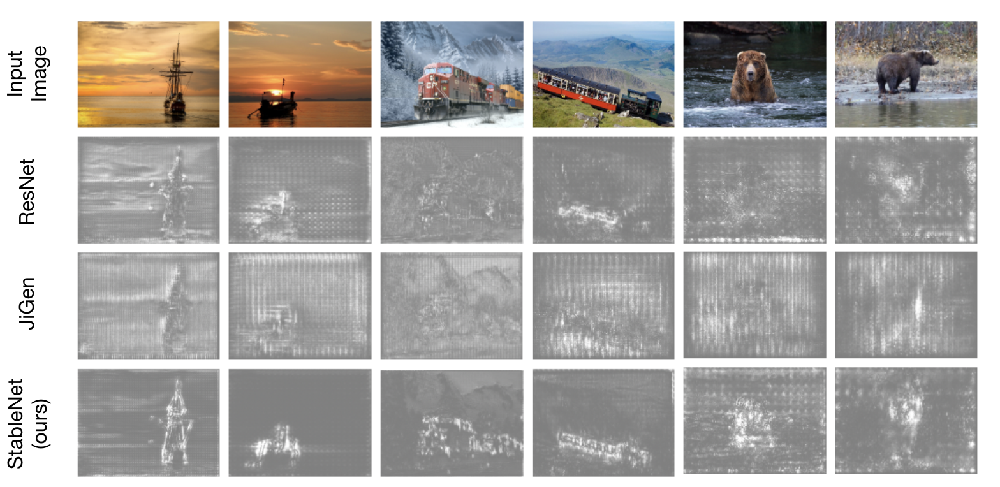

Learning Summary 3
Learning summary 3
公开课
Machine Learning 2021 Spring：
- Spatial Transformer Layer （使CNN 具有旋转平移不变性）
- RNN and LSTM
- Gragh Neural Network：How to embed node into a feature space using convolution？
- Spatial-based convolution：
- E.g, NN4G 、DCNN、MoNET、GAN、GIN
- Spectral-based convolution：将 Graph和Filter进行Transform到 Fourier domain 中做 Multiplication，得到结果再inverse Transform，实现Convolution
- 对 Graph Laplacian Matrix 进行特征分解，得到特征向量矩阵即为变化矩阵
- E.g ChebNet、GCN
- Spatial-based convolution：
- Tranformer
- Encoder: one block ( positional Encoding + mul-head attention with residual connection + FC )
- Decoder
- Autoregressice: Masked Multi-head Attention
- Non-Autoregressive
- The Connection between Encoder and Decoder: cross attention
PyTorch
Audio Classification with Spectrogram
- dataset ： open dataset Speech Commands
- Data visualization and transformation
- plot waveform with different sample rate
- Spectrogram
- Mel Spectrogram:
- Mel-frequency cepstral coefficients
- Build model
- Spectrogram resize to (201, 81)
- CNN and Linear Classifier
- Train acc: 91% Val acc: 90%
paper
在观看 CVPR 2021时看到一篇很有意思的paper （StableNet：Deep Stable Learning for Out-of-Distribution Generalization ）
deep learning 模型基于独立同分布的基本假设，training data 和 testing data 具有相似分布时，模型的性能往往十分惊人，但实际中 testing data 的分布与 training data 分布往往相差较大，导致模型不能做出可信预测。文章希望在不同分布下的 average performance 没有很大的下降情况下，使模型 accuracy 的方差尽可能小，性能保持稳定.
Stable learning 基本假设：the domains of training data are unknown and we do not implicitly assume that the latent domains are balanced.
鉴于相关和不相关特征之间的统计依赖性是分布转移下模型崩溃的主要原因，所以通过对相关和不相关特征进行去关联化来实现分布外泛化。已有提出了以输入变量去相关为目标的样本加权方法，理论上证明了这样的样本加权可以使
线性模型在分布偏移下产生稳定的预测。Work
- 通过对样本进行全局加权来解决分布偏移问题，直接对每个输入样本的所有特征进行去相关，从而消除了相关和不相关特征之间的统计关联性，并通过RFF来衡量一般的独立性。
- 提出了一种有效的优化机制，通过迭代保存和重新加载模型的特征和权重来实现 perceive and remove correlations globally
Experiment：分别测试了 Unbalanced setting、Unbalanced + flexible setting、Unbalanced + flexible + adversarial setting、classic setting
Saliency map：为了演示模型在进行预测时是否关注对象或上下文 (domain)，可视化了类分数函数相对于输入像素的梯度. 图中的 baseline model 的 Saliency map 显示，分类器对背景有着过多关注，呈现弥散型，而模型性能却没有做出决定性的帮助。 证明了StableNet更关注于视觉部分，当对象的姿势或位置变化时，这些视觉部分既具有区别性又具有不变性。
